轻量化 SLG 海外赛道 · Steam 原型数据分析


- 简中 3,178 + 繁中 680 + 日 385 + 韩 433 = 东亚强共鸣
- "开包即爽"的多巴胺核心，与港口开箱 / 仓储拍卖完全同源
- App Store 同名山寨版仅 600 下载、3.7 星，说明官方未上移动端 → 我们有空窗
- 结论：拆包爽点 + 经营闭环 = 最适合轻量化 SLG 前端钩子

- 英语 30,641 (57.5%) 主导，说明欧美是核心盘
- 日语真实只有 282 条（0.53%），之前我错写 12% 是幻觉，已更正
- 简中 2,970 + 繁中 374 = 中文玩家 6.3%，对克苏鲁渔夫有兴趣
- iOS 已登陆（$24.99 一次性解锁），证明海外玩家愿为慢节奏海洋题材付费

- 英语 1,684 (47%) + 德语 358 (10%) → 欧美文化直接资产（Storage Wars 电视剧 IP）
- 简中 358 条意外高（10%），说明华人玩家对拍卖淘宝也感兴趣
- 79% 好评说明执行层有问题：AI 生成内容、引导差
- 结论：题材方向验证成功，我们做港口开箱可吸收其用户但要做得更精

- 俄语 8,718 条（38.8%） > 英语 3,021 条（13.4%） · 题材极度区域性
- 土耳其 1,337 + 波兰 646 → 东欧/中东强，欧美反而是补充盘
- "极权公寓"对欧美玩家情感门槛高，对东欧/俄语区是共情
- 结论：不适合主打欧美，但如果做俄语区/东欧市场可强推

- 禁酒令/黑帮题材本身没问题，但重度 TBS + bug 多 = 失败
- 证明：同题材做重度不行，但做轻量化 + 拆包拉人 = 还是蓝海
- 语言分布相对均衡（英/俄/欧均有）→ 题材本身有全球受众
- 结论：保留题材，彻底抛弃玩法形态，做 Schedule I 骨架 + 禁酒令皮

- 拳击垂直品类英语区承载力足：单原型拿下 13,528 英语评论
- 60% 好评 = 硬核拳击玩家对细节要求极高，轻量化反而可能更稳
- 日/韩/中评论数过少，亚洲市场仍是空白
- 结论：地下拳击做轻度经营（拳馆老板视角），可避开硬核拳击的坑

- 白天用仪器和外观特征筛出伪人，提供短局判断压力和强直播可看性
- 夜晚用高空机枪炮打尸潮，把白天筛查失误转化为即时战斗反馈
- 疫情 / 僵尸 / 伪人恐怖素材需要软化，买量素材应突出"检疫哨站"而非血腥感染
- 结论：比纯塔防更适合做"检查站经营 → 隔离区扩建 → 联盟防线"轻 SLG

- 评论总数仅 2,123 → 纯善题材承载力有限
- 纯慈善缺乏"对抗感"，长线留存难
- 动物题材本身可用，但要加偷动物/打击黑市/对抗猎人等冲突层
- 结论：保留情感壳，内核改为"动物联盟 vs 黑市/猎人"
- 英语区是绝对主盘（约 55%），美欧澳是任何海外项目的必选
- 德语/西语/法语合计 ~15%，欧洲非英语区是被低估的肥肉
- 俄语 5-10% 波动大，强依赖题材（Beholder 类高达 38.8%，拆包类仅 2%）
- 防疫 / 检疫方向已有英俄双市场信号，Quarantine Zone 英语 4,995 + 俄语 1,905，适合先按欧美 + 东欧做题材验证
- 中文（简+繁）~4-8%，东亚市场需要针对性题材才能激活
- 日语通常仅 0.5-1%（DREDGE 真实 0.53%），日本 Steam 盘很小，要打日本必须上 App Store
数据支撑：拆包爽点跨题材全部 79%+ 好评（TCG Card Shop 97% / Schedule I 97% / Storage Hunter 79%）。MrBeast 港口开箱系列 YouTube 单集 1-3 亿播放。
为什么选它：拆包多巴胺是人类通用爽点（无文化壁垒），两个原型都没做深度经营/SLG，正好留下空窗。
三层结构：港口拆箱（前端爽点）→ 码头防御 + 海关博弈（中层 Thronefall-like）→ 港口势力争霸（后端 SLG）
目标市场：英语区主攻（55%+ 基本盘）+ 西班牙语/德语拓展盘，中文区用"华商港口"题材激活
- 合规：欧盟 lootbox 审核备用包体（$X 抵扣券 + 保底物） — Slide 17 / 19a
- 区服：JP/KR 深度本地化验收人 + 中东去劫匪事件替代 — Slide 19a
- 团队预算：M1 配置卡 15 人 × 9 月 = $2.0M（Day 90 demo / Day 180 灰度 / Day 270 上线） — Slide 20 脚注
- 产能：50 封 M1 储备 + 20 封/月 × 6 月 + AI 辅助 = 120 封 M3 目标 — Slide 14e
数据支撑：Schedule I 45.9 万峰值（Steam 史上独立前 10）+ 97% 好评证骨架爆火。但原题材毒枭如果走黑帮买量，CPI 和素材竞争会明显更贵。
为什么选它：蒸馏成 1920s 美国禁酒令 = 保留"违禁品生意"的禁忌快感，但买量素材更优雅，CPI 压力预计低于原味黑帮/毒枭路径。
买量成本：威士忌/朗姆酒是高净值消费品，广告素材可以拍得非常精致，比原味黑帮/毒枭更容易做低成本泛投素材。
目标市场：欧美禁酒令文化共鸣极强（美剧《大西洋帝国》+ 电影《了不起的盖茨比》），东亚也有"上海滩"共鸣可转换
- 区域：Slide 20 补「T3 绝对不上架国家清单」+ 中东备选"无酒精薄荷饮/香料经营" SKU — 发行经理 + 法务签字
- 资产复用：Slide 25 写明"70% 复用 = 代码/经营系统"而非全部美术；加 Phase1/2 资产考据包人周表
- 变现口径：IAA 55% / IAP 45%（PPT）vs IAP 85% / IAA 15%（应答集）必须单一口径，其他版本只能是"备选 aggressive"
- 评级：火拼用剪影/侧写/非写实伤害，Slide 20 统一标 17+/M + PEGI 咨询预算
- CPI：Slide 22 拆"精准 $2.0-2.8 / 泛投 $4.5-6.5"两行，US 回本 D60-D90 必须锚定其中一套
数据支撑：Steam 真实数据极强——总评 47,061 · 好评 97% · 简中 3,178 (6.8%) + 繁中 680 (1.4%) + 日 385 (0.8%) + 韩 433 (0.9%) = 东亚玩家 ≈ 10%，是所有原型里东亚占比最高的之一。
为什么选它：原作只做"开店-拆包-定价-顾客"单店闭环，完全没有做多店扩张、同行竞争、城市流通、版本更新期的策略博弈，SLG 改造空间极大。官方至今未上移动端（只有个别第三方山寨版 600 下载 3.7★），留下 1-2 年窗口期。
SLG 改造方向：单店拆包（爽点钩）→ 多店连锁 + 稀有卡投资（Thronefall-like 决策层）→ 玩家工会 / 城市卡场竞争 / 版本轮换元游戏（SLG 层）。可复用 TCG 周边的"集换式"情感锚点（真实玩家对 Pokémon/YGO 有 20+ 年情感积累）。
目标市场：英语区 + 东亚（日韩台）双核心，与其他方向互补。女性玩家 + 垂直 TCG 文化用户（全球估算 5000 万+）都能覆盖。
风险点：需要自研虚构卡牌 IP（不能直接用 Pokémon/MTG），前期美术投入比港口开箱高。
- 团队缺口：L5 D60+ 自研 IP 需 18 人月，当前预算只够 12 人月，补 4 列"团队 / 排期 / 预算分布"卡 — Slide 28
- 版号预案：TCG"开包" ≠ G 类 lootbox（店主视角），备"卡牌兑换"机制作为 Plan B — Slide 26
- UR 选手机制：7 天内免费召回 1 次 + 超期召回 30% 主场建设费，UR 档案永久保留 — Slide 21
- 情感钩时机：P2 父亲笔记仍保留 15-20min（被动收入拐点 +5min），不延后 — Slide 11
- 沙特合规：卡包改名"商品包" + 隐藏概率 + 斋月限投 + 预审 $8K → 法律预算 $25K → $33K — Slide 26
数据支撑：DREDGE 销量 100 万+（上线 7 月达成）· PlayTracker 估算 290 万玩家触达 · 好评率 96% · 刚于 2026.04 上 Apple Arcade（DREDGE+）· 拿下 2025 Apple Design Award + App Store 2025 iPad 年度游戏。移动端付费模式验证成功（一次性 $24.99 解锁）。
Steam 语言分布（真实）：英语 57.5% · 简中 5.6% · 西语 3.2% · 德语 2.9% · 俄语 2.3% · 法语 2.2% · 韩语 1.8% → 全球均匀渗透型，没有极端区域化。
为什么选它：DREDGE 自己是单机叙事 RPG，没做多岛经营 / 海上势力 / 渔业联盟这些 SLG 层。轻克苏鲁（Lovecraftian）+ 海洋探索这两个标签在 Steam 极其强势，但在移动 SLG 赛道完全空白。
SLG 改造方向：日常出海打捞怪物鱼（前端放置）→ 母船装备升级 / 船员雇佣 / 夜间恐怖事件防御（中层决策）→ 多港口收购 / 争夺深海遗迹 / 海底神庙联盟战（后端 SLG）。克苏鲁氛围天然适合"低头看手机"的移动端节奏（对比毒枭题材的高 CPI，深海题材广告素材非常优雅）。
目标市场：英语区（欧美宅男 + 恐怖爱好者）+ 日本市场（克苏鲁文化日本接受度极高，DREDGE 在 iPad 上日本榜单强势，虽然 Steam 日语 0.53% 但这正说明日本要走 App Store）。这是本方案里唯一有把握打开日本市场的方向。
风险点：恐怖氛围的美术难度高，不能做得太卡通化失去了克苏鲁的诡异感。
- 团队预算：SLG 层 D14+ 需 4 程序 + 2 服务器 = 6 人月，拆 D0-D14 / D14-D60 / D60+ 三阶段 — Slide 28
- 国内版号：改「深海考古」叙事 — 古神→异常生物 / 理智值→航海经验值 — Slide 26 预留本地化方案
- 评级风险：文案统一改成「灯塔信号 / 探索请求」保 ESRB 13+ / PEGI 12 + 5K 评级预审预算 — Slide 14/17
- 15-30min 诡异感：保留「理智 80 + 触手剪影 + 警告 banner」设计（续命而非劝退，回港即理智回满） — Slide 14
- D2 留存目标：拆「目标 70% / 红线 50% / 现实 55-60%」三档，别让团队押上所有资源做 D2 — Slide 18
- CPI 三档：保守 $2.50 / 中性 $1.80 / 激进 $1.20 已有，但要明确主投欧美男性 + DREDGE 老粉 + Lovecraft 粉 — Slide 24/25/27
数据支撑：To The Rescue 只有 2,123 评论 67% 好评说明"纯善救助"承载力有限。但 Stray（猫咪视角）Steam 超 25 万评论 96% 证明"以动物为主角"的情感叙事有爆款潜力。
为什么选它：单纯救助缺冲突层。加入"从黑市/马戏团偷救动物"的盗贼爽感 + SLG 扩张 = 情感 + 策略 + 叛逆三重钩子。
全球共鸣：动物保护是全球左翼/环保议题 · 欧美基础盘极大 · 东南亚 + 欧美 + 港澳台都能吃
目标市场：女性玩家 + 情感驱动玩家（之前 Last Asylum 证明情感驱动可行）
- 美术成本：双 palette UI × 2 + 60 NPC 表情 + 100+ 动物图鉴 + 4 区域场景 + 5 反派立绘 ≈ $48K（普通 $20K 的 2.4×），周期 4-5 个月 2-3 主美 — Slide 28
- 反派内容产能：5 反派 × 14 周 = 70 周，需 5 内容策划 + 3 关卡策划并行，上线前完成 #1-#3 + LiveOps 推 #4-#5 — Slide 28
- 公益合规：WWF / Best Friends 框架协议 $100K/家 × 3-4 家 + 0.5% 流水入捐款 + 季度 KPMG 审计 $30K/年，Slide 26 增"公益合规"栏，避免 FTC 消费者欺诈
- 战斗密度：D1 末塔防 + D2 早潜入保留（失败损失 30% / 自动触发狐狸志愿者分散），延后到 D5 反而断崖 — Slide 16/17
- 道德→付费：Slide 23 新增「救助加速包 $4.99 + 额外捐 $1」+「年度公益 Pass $39.99 + 捐 $10 给当地动保」，把道德爽点转化为付费动力
数据支撑：Quarantine Zone 已在 Steam 拿到 11,618 条评论、92% 好评；英语 4,995、俄语 1,905、简中 580，说明它不是单一区域小众题材，而是欧美 + 东欧先行验证过的双阶段原型。
为什么选它：白天"识别伪人"负责短局判断和直播传播，晚上"高空机枪炮防尸潮"负责即时战斗反馈。这个组合比单纯塔防更适合轻量化 SLG，因为每一次检查结果都能自然影响晚上的防线压力。
SLG 放大方式：检查站经营 → 隔离区扩建 → 仪器升级 → 防线火力配置 → 多区域检疫网络 → 联盟共建边境防线。前端是单点哨站，后端能自然长成地图级防疫区。
风险边界：僵尸、感染、伪人恐怖和疫情词都要做素材软化：对外买量优先讲"检疫哨站 / 边境安全 / 夜间防线"，避免血腥感染特写和现实疫情联想。
最新 PPT：J_防疫区_Quarantine-Zone+Papers-Please+Tower-Defense+My-Perfect-Hotel_20260429_192824 · Game Review：4.20 / Conditional Pass · 夜战页已替换为“第一人称火力操作”实机帧
立项状态：已完成 PPT / Game Review 闭环，建议进入 4 周可玩原型验证；优先验证白天误判是否能自然转化为夜里火力压力，以及“白天揪出伪人，晚上亲手守住防线”是否能承接买量承诺。
数据支撑：Undisputed 英语区 13,528 条证明拳击品类英语区有承载力。但整体 60% 好评说明硬核路线风险高，亚洲市场评论数极少。
为什么选它：做轻度拳馆经营（签约拳手 + 训练 + 出赛 + 场馆升级）可避开硬核拳击玩家的高要求
注意点：要蹭"Rocky / Fight Club"的 IP 情感，不要做真实 UFC 授权（成本太高）。暴力 UGC 在 TikTok 买量需要软化处理（卡通血 / 第三视角）。
最新 PPT：C_地下拳馆_Undisputed+Rocky+Fight-Tycoon+My-Perfect-Hotel_20260428_142800 · Game Review：4.32 / Pass
数据支撑：题材识别度来自"酒店内不得开火"的规则钩子，经营底盘来自综合体酒店功能区：礼宾、客房、医务、装备、情报、会谈空间。
为什么选它：它不是普通酒店经营，而是"危险世界的中立秩序服务"；小店、街区、城市中立网络三层放大天然成立。
注意点：前 15 分钟必须让玩家处理真实规则事件，否则容易被误读成高端酒店模拟；外层必须围绕中立权、停火权、交易权，不能退化成普通打地盘。
最新 PPT：B_大陆酒店_John-Wick+Continental+My-Perfect-Hotel_20260428_145441 · Game Review：4.16 / Conditional Pass
数据支撑（诱惑很大）：Schedule I 单平台 Steam 45.9 万峰值 · 292,471 评论 · 97% 好评 · App Store 已有 3+ 款同名山寨品上架（4.4 星 37 评 / #24 Simulation 榜），证明玩家需求真实存在且旺盛。
核心问题 · 黑帮买量可用，但 CPI 可能很贵：
• 素材包装：不要按毒品生产硬拍，买量应走 Mafia-like 的黑帮、家族、地盘、路线和豪宅视觉。
• 投放竞争：黑帮题材可以买，但同类素材竞争成熟，CPI 通常会比中性经营题材更贵。
• 预算要求：如果继续 D，需要把 ROI 模型按高 CPI 情景重算，而不是套 A 港口 / G 禁酒令的便宜流量假设。
• 验证方式：不能只看 Steam 热度，必须补黑帮买量素材测试、创意疲劳速度和可扩量上限。
SLG 模式风险：SLG 是重买量品类。D 的后端 LTV 理论上能接 Mafia/COK，但如果前端 CPI 太高，长线付费需要更强数值深度才能打平。
结论：先不把 D 定义成政策问题。D 可以保留 Mafia/COK 的身份、地盘、组织结构；风险从“不能买”修正为“能买但贵”，G 禁酒令是更便宜、更宽受众的替代路径，但不是唯一答案。
- 高 CPI 预算：Slide 23 新开高 / 中 / 低 CPI 情景表，不能沿用中性经营题材成本。
- 黑帮买量假设：Slide 17 必须拆 Mafia-like 黑帮素材、家族/豪宅素材、路线/地盘素材三套 ROI。
- 国服结论：Slide 21 明写"不做国服"（集团已批准前提），否则题材替换为合法隐喻 Plan B。
- 移动端假设：Steam 热度 ≠ 移动端可规模化 UA，必须补小额素材测试和创意疲劳曲线。
- 低成本版循环：Slide 12 如果去掉最刺激素材，只保留黑帮/地盘/路线，四层循环与 SLG 终局是否还能成立？画不出就冻结开发。
- 买量素材：Slide 07 删除"过审无障碍"表述，改成"可投但高 CPI，需实测"。
- 非买量增长：新增 Reddit / PC 模组 / 主播 / 社群通道，每条给量化上限，不能替代 UA 主模型。
- 评级敏感度：Slide 21 家长锁 + 18+ 题材会缩小可安装人群，Slide 17 LTV 必须乘以"可安装人群缩减系数"。
前一页回答“哪些 Steam 原型和题材提案值得看”，这一页回答“这些提案如果要做成 SLG，应该接哪一种商业化和养成骨架”。16 个商业化养成原型不是新增题材，而是行业里已经反复验证过的付费、养成、赛季和社交承接方式。
这一页补齐原型机制细节：兵种 / 克制 / 战损 / 重养成对象 / 玩家锚点 / 赛季窗口 / 理解门槛。所有机制结论先按来源等级校验：A=官方帮助中心 / 商店页，B=产品 Wiki / 长期攻略站，C=社区经验 / 行业文章；证据不足时写“未确认”，不把推测写成事实。
横纵分析后的修正：COK / ROK 是后端深水层，WOS / Kingshot / Top War / Top Heroes 解释了轻入口趋势；再补 Last War-like、Puzzle 4X、Evony-like、Mafia-like、Lords Mobile-like、Dragon/Beast-like、Ecology-like 与 IP Season-like 后，当前页面统一按 16 个商业化养成原型对比。
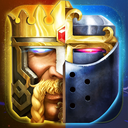
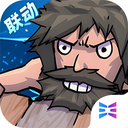
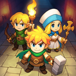
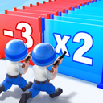
Last War / Last Z-like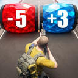
Puzzle 4X-like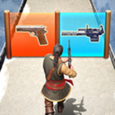
Evony-like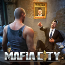
Mafia-like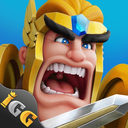
Lords Mobile-like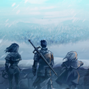
Dragon / Beast-like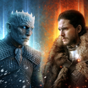
IP / Faction Season-like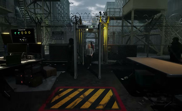
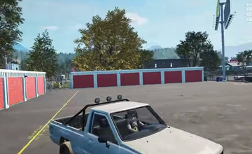
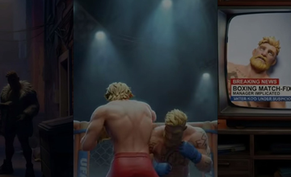
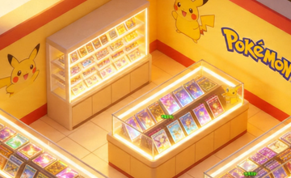
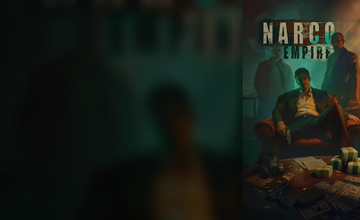
读完原型和商业化适配后，这一页把判断方法抽象成立项标准。判断一款外部 SLG 产品是否值得立项，不能靠题材新鲜感、商店标签或广告截图。核心问题只有一个：它是否在用户更偏好轻量入口的趋势下，仍然能保留 SLG 的长期目标、社会压力和可商业化深度。
本页不再使用二元标签。统一按重度 SLG、轻量化 SLG和轻量化颗粒度来判断；所有结论必须回到维度、数据和可验证标准。
| 排序 | 类型 | 立项倾向 | 适合什么时候做 | 核心风险 | 当前判断 |
|---|---|---|---|---|---|
| 1 | 复合玩法轻量化 | 优先级最高 | 有明确副玩法钩子：塔防、三消、经营、卡牌、合并、射击，并且能自然接联盟 / 赛季 / 地图。 | 钩子和 SLG 后端断裂，玩家觉得广告和实机不一致。 | 最符合从“SLG+X”转向“X+SLG”的趋势；先用玩家熟悉的动作解释变强，再逐步打开 SLG 后端。 |
| 2 | 中度轻量 | 优先级很高 | 题材本身能解释基地、英雄、队伍、设施成长，例如生存、避难所、探索、职业身份。 | 买量不如极轻量锋利，需要更强内容、中期留存和后端节奏能力。 | 不是最轻，但最稳；适合要做长期商业化，而不是只测素材点击的方向。 |
| 3 | 极轻量 | 适合入口验证 | 快速测 CTR / CVR / D1 / 前 10 分钟完成率，例如跑道射击、短局塔防、开箱、合并。 | 只有入口爽感，没有 D7-D30 后端，会变成素材项目或短命产品。 | 可以作为买量入口和首日验证，不宜单独当完整 SLG 方案；Last War 的关键是极轻入口后面接了重度 4X 后端。 |
| 4 | 包装层面轻量化 | 谨慎 / 条件立项 | 团队本来就能做重度 SLG，或有强 IP、强买量预算、成熟运营能力。 | 表面轻、核心重，容易误判成本；预算、团队、运营、战损、联盟组织都仍按重度项目估。 | 不是不能做，而是不能当“轻量项目”做；Evony / Mafia / Lords Mobile-like 更像重度项目的表层软化。 |
| 维度 | 核心问题 | 需要的数据 / 证据 | 通过标准 | 分值 |
|---|---|---|---|---|
| 1. 用户趋势契合 | 它是否符合用户从重度前置转向轻量入口、短局反馈、低理解成本的演变？ | 商店评论、榜单、下载量/评论量、语言分布、社区讨论、同类产品走势。 | 不是单点灵感，至少有公开产品或用户行为证明这一类爽点在目标市场成立。 | 12 |
| 2. 首屏 Hook 与 D0 循环 | 玩家前 10 分钟是否知道自己在做什么、为什么变强、下一步要点哪里？ | 可玩原型、录屏、首局完成率、教程退出点、广告点击到实机的落差。 | D0 至少能跑通 3 个明确反馈循环；不能依赖长教程解释核心爽点。 | 12 |
| 3. 入口人群与后端压力匹配 | 前端吸进来的玩家，是否愿意被转化到后端的生存压力、战争压力或数值验证场景？ | 前端素材人群、D0 核心爽点、D7-D30 后端压力类型、流失点访谈、活动开启率。 | 入口用户的动机必须和后端付费/留存压力同源；RNG/模拟经营用户不能被默认视为战争用户。 | 15 |
| 4. 轻量化颗粒度匹配 | 它是极轻量、中度轻量、复合玩法轻量化，还是只是包装层面轻量？ | 系统开放节奏、PVP 首次出现时间、玩法钩子与后端资源的关系。 | 颗粒度要匹配目标人群、买量预算和团队能力；不能把包装轻量误当成研发低风险。 | 10 |
| 5. SLG 后端承接力 | D7-D30 后，玩家是否还有地图、联盟、赛季、资源竞争或集体目标可追？ | 联盟系统、地图层、赛季活动、PVE/PVP 递进、资源消耗与恢复机制。 | 能解释“为什么要抱团”和“为什么每天回来”，且战争压力能被题材自然解释。 | 13 |
| 6. 商业化锚点 | 付费是否顺着题材、身份和失败原因自然长出来？ | 礼包结构、升级瓶颈、英雄/资产/设施/装备锚点、战令与基金设计。 | 玩家知道自己为什么付费；付费点不是硬塞的抽卡、加速或战力包。 | 13 |
| 7. 买量与素材边界 | 素材能否规模化投放，是否会被高 CPI、创意疲劳或合规边界吞掉？ | 渠道政策、同题材广告素材、CPI/CTR 相对内部基准、素材池宽度、区域限制。 | 中性题材优先；黑帮、疫情、暴力等方向必须先有小额素材测试或明确预算模型。 | 13 |
| 8. 可验证与可执行性 | 团队能否在 4-8 周内做出可玩样本，并拿到可以推进/否决的数据？ | 范围切分、可复用资产、埋点计划、D1/D3/D7、素材测试、用户访谈。 | 能用一轮小样本验证关键假设；如果必须先做完整 SLG 才能判断，立项风险过高。 | 12 |
| 排序 | 对象 | 验证状态 | 同口径分数 | 判定 | 为什么是这个位置 |
|---|---|---|---|---|---|
| 1 | Whiteout Survival / 寒霜启示录 | 已跑通 / 市场验证 | 84.0 | 可进入立项验证 | 炉火、生存、居民、资源、联盟和州战在同一条“活下去”逻辑里，前端情绪和后端战争压力连接最顺。 |
| 2 | Kingshot | 已跑通 / 市场验证 | 78.5 | 小样本验证 | 难民治理、岗位、法令和守城天然指向秩序崩坏与战争压力，入口用户和后端压力比纯 RNG 入口更同源。 |
| 3 | Top War | 已跑通 / 市场验证 | 77.0 | 小样本验证 | 冰封救援/军武合成入口虽然偏休闲，但合成对象本身就是士兵、基地和战力，用户更容易被带到单位升级、联盟战和地图竞争。 |
| 4 | 疯狂水世界 | 已跑通 / 市场验证 | 76.0 | 小样本验证 | 打捞、生产和漂浮经营入口很顺，但经营用户转向联盟海域、舰队攻防和赛季竞争仍需要转化验证。 |
| 5 | 方向 J：防疫区 / 检疫哨站 | 未跑通 / 立项题材 | 75.5 | 小样本验证 | 白天筛查和夜晚防线天然筛入生存/防守压力玩家，后端联盟防线比纯经营转战争更顺，但素材需要软化。 |
| 6 | 方向 G：禁酒令私酒帝国 | 未跑通 / 立项题材 | 75.0 | 小样本验证 | 私酒、生意、地盘和夜袭防守的人群动机相对同源；主要扣分仍来自酒精区域限制、素材成本和 IAA/IAP 口径。 |
| 7 | Top Heroes | 已跑通 / 市场验证 | 73.5 | 小样本验证 | 红龙/RPG 式竖屏单手入口更像英雄探索和角色养成，能承接队伍数值验证，但玩家不必然接受硬地图战争，所以低于 Top War。 |
| 8 | 方向 C：地下拳馆 | 未跑通 / 立项题材 | 71.5 | 小样本验证 | 拳手成长和联赛竞争可以承接数值验证，但拳馆经营用户未必接受联盟/地盘后端，暴力素材也要软化。 |
| 8 | Last Asylum: Plague / 乌鸦医生 | 已跑通 / 市场验证 | 71.5 | 小样本验证 | 医馆、草药、鼠群防守和感染区能接生存压力，但疾病敏感度、后端证据和长期付费深度在材料里偏弱。 |
| 10 | 方向 A：港口开箱 | 未跑通 / 立项题材 | 70.0 | 小样本验证 | 开箱和鉴定吸入的是 RNG / 模拟经营 / 收集玩家，不天然是生存或战争玩家；必须先验证商会竞标、航线占位再转联盟竞争。 |
| 11 | 方向 B：大陆酒店经营 | 未跑通 / 立项题材 | 69.5 | 小样本验证 | 酒店经营入口和代理人/黑帮服务网络之间有吸引人群差，第一屏经营用户能否转到规则、地盘和冲突要单独测。 |
| 12 | 方向 E：TCG 卡店帝国 | 未跑通 / 立项题材 | 68.5 | 小样本验证 | 开包和收藏用户非常强 RNG，但不天然愿意转到 SLG 战争；更适合版本轮换、俱乐部联赛和市场博弈，而不是硬联盟战。 |
| 13 | 方向 H：深海守望者 | 未跑通 / 立项题材 | 68.0 | 小样本验证 | 深海探索和生存恐怖能接部分外部威胁，但钓鱼/探索用户转向联盟海域竞争、D2 留存和本地化仍有风险。 |
| 14 | 方向 I：动物联盟 | 未跑通 / 立项题材 | 65.5 | 小样本验证 | 动物救援吸入的是善意、照顾和收集用户，和战争压力最不吻合；除非后端改为城市守护和救援竞赛，否则付费与冲突都难转。 |
| 15 | 方向 D：Nightking 毒枭原味 | 未跑通 / 高 CPI 重构 | 49.0 | 不立项 / 需重构 | 海外盘和 SLG 空间都强，但黑帮买量成本、素材竞争和创意疲劳会吞掉模型；需先做高 CPI 情景表和小额素材测试。 |
为避免“前期”“轻量”产生歧义，本页把判定范围收窄到 D7-D30 之后的后端入口：养成对象、付费核心、商业化深水层、联盟赛季、多人关系绑定度、主城/行军/飞地规则。前端广告、教程和首局可以很轻，但后端仍可能是重度 SLG。
用户提供的《轻量化 SLG 研究》和《CGI 赛道策略与判断标准》可以继续使用，但应改写成后端轻重度判定工具：重度后端轻入口、角色/卡牌/经营驱动的轻量后端、接地飞地或限时节点战。判断时不能只看题材、商店标签或广告素材，要看主城是否可被攻打、是否全天候行军/掠夺，以及付费到底卖加速还是卖英雄/卡牌养成。
本页处理方式：把资料里的 Q1 / Q2 / Q3 与前面讨论的“飞城 / 飞地”合并。外部已经能确认的写进表；只能从内部资料或社区经验看到的，统一标“待实机核验”。
| 样本 | 分类 | Q1 主城可被攻打 | Q2 行军 / 掠夺 | Q3 付费核心 | Hook 与本体关系 | 飞城 / 飞地口径 | 核验状态 |
|---|---|---|---|---|---|---|---|
| Whiteout Survival WOS / 寒霜启示录 |
重度后端轻入口 | 已确认主城防御、Barricade 燃烧与被打后迁移机制；官方 Combat FAQ 同时确认步兵 / 枪兵 / 射手和伤亡结算。 | 联盟、大地图、城堡战、州龄事件承接 4X 后端；全天候行军细节需要按服制实机补齐。 | 基地、英雄代际、首领装备、宠物/伙伴、治疗与加速，战争付费被生存叙事包装。 | 广告钩子偏强，但本体仍是 4X 生存基地。 | 自由飞城 + HQ / 设施点状领地；不是纯接地扩张。 | 官方 + 二级 |
| Last War: Survival 射击入口 + 4X 后端 |
重度后端轻入口 | Google Play 可确认基地建设、扩军、三军英雄与联盟；主城燃烧 / 护盾 / 战狂细节主要来自 Last War Handbook，需实机复核。 | 二级攻略明确 March / Rally / troop deployment；赛季、联盟与大地图是后端主体。 | 英雄、三军分支、基地、联盟、赛季；广告入口只解决低门槛获客。 | 射击 / 跑道小游戏在前端持续出现，但用户差评也说明它与基地后端存在落差。 | 自由迁移 / 联盟迁移 / 护盾约束并存；是否允许长期飞地要按当前版本核验。 | 官方 + 二级 |
| Top Heroes 英雄探索 + 领地建设 |
中度轻量 / 待核验 | App Store 确认 territory、armies、alliances、resources 与 enemies；Wiki 记录 Castle 作为 HQ、医院、资源掠夺上限。城堡被打后“飞离公会”仍保留待实机。 | Ruins 攻防里有 scout / attack / rally / marching，公会占领 ruins 后获得区域领地。 | 英雄、装备、城堡、皮肤、热卖包、战令；抽英雄存在，但不是唯一付费点。 | RPG Adventure 是持续入口，后端逐步转公会、废墟和领地。 | 公会废墟控制区域 + guild relocation，更像接地 / 节点领地，不等同 COK 自由飞地。 | 官方 + 二级，Q1 待补 |
| 疯狂水世界 经营 + 卡牌 + 联盟城战 |
经营卡牌轻后端 | 资料判断为个人生产中心不承担传统主城战斗；外部资料确认主要冲突发生在联盟城市 / 守军层。 | 小米攻略确认每天 20:00-21:00 城战、城市宣战、联盟城市募兵与舰队出征。 | 英雄卡、阵容、装备、VIP、战令、产线与联盟贡献。 | 点击经营不是广告假入口，而是本体主循环的一部分；SLG 更像中后期承接。 | 节点城战 / 联盟城市型飞地；不按个人主城自由迁城组织战争。 | 二级来源为主 |
| 指尖无双 横版经营 + 武将卡牌 + 联盟攻城 |
经营卡牌轻后端 | 个人横版领地更像经营场；外部资料确认攻城对象是地图城市、城墙与守军，不是传统个人主城互拆。 | TapTap 攻城计策确认 19:00-21:00 联盟玩法窗口；内部资料提到 13:00-14:30 宣战，仍需实机复核。 | 武将抽取、阵容、赛季武器、联盟贡献；战斗消耗表现为武将受伤和澡堂恢复。 | 街机 / 经营表达与本体绑定，SLG 是赛季联盟组织层。 | 宣战城市 / 接地路线 / 固定时段；不应按自由飞城模型估算 PVP 压力。 | 二级 + 待核验 |
| 这城有良田 / 长安养城记 混合例外样本 |
轻入口 + 接地战争 | 攻略与评论能看到戎车、残兵治疗、资源被掠夺等 SLG 压力；但题材与前端仍是县令经营。 | 戎车、攻城令、侦查、敌对县 / 城池，结构更接近接地城战，而不是完全自由飞地。 | 既有门客 / 抽卡，也有城防、戎车、课业、资源和赛季治理。 | 经营是入口和身份包装，战争系统承担中后期消耗。 | 接地型扩张样本；适合解释“不是所有重度后端都必须自由飞城”。 | 二级来源，需实机 |
评委会配置：资深制作人（15 年）· 战略专家·题材策略（18 年）· 战略专家·玩法系统（10 年）· 运营·用户运营/LTV（6 年）· 运营·投放/CPM（8 年），共 5 人。
打分维度（v4.2 · 7 维核心）：战略-题材匹配度 / 玩法-核心循环 / 玩法-时间节点 / 玩法-阶段过渡 / 商业化-付费/留存 / 风险-题材/买量边界 / 美术/配色/素材 （v4.2 精简：移除「落地-团队/排期/预算」「演讲-PPT 表达力」两维——执行层 + 演示层不应决定立项 PASS/REJECT，相关问题降级到 P0 清单）。
统一复审节点：2026-05-04（D 方向除外，需先补题材包装与买量成本模型后再约）。
评审原始材料：
ppt-master/projects/review-summary.md（各项目 P0 清单、共性问题、推进建议 · PPT 工程链接已挂到项目名上）
ppt-master/projects/review-summary.md §I| 排名 | 方向 · PPT 文档 | 7 维均分 | 旧 9 维 | 裁决 | 关键亮点 | 关键短板 | P0 |
|---|---|---|---|---|---|---|---|
| 1 | 方向 A · 港口开箱A_港口开箱_v4_含评审优化 | 4.26 | 4.16 | ⚠️ CP | 玩法循环 4.6 / 付费留存 4.6 / 时间节点 4.6 / 美术 4.6（四项 ⭐） | 风险合规 2.8 ⚠️ | 4 |
| 2 | 方向 G · 禁酒令私酒帝国G_禁酒令私酒帝国_Schedule-I+Peaky-Blinders+My-Perfect-Hotel | 4.17 | 4.09 | ⚠️ CP | 时间节点 4.8 ⭐ / 玩法循环 4.6 ⭐ / 题材匹配 4.4 | 风险合规 2.4 ⚠️ | 5 |
| 3⬆ 从 #4 | 方向 I · 动物联盟I_动物联盟_动物庇护所+Zootopia情感叙事+My-Perfect-Hotel_20260421_000314 · 云端已覆盖 | 3.94 | 3.89 | ⚠️ CP | 时间节点 4.6 ⭐ / 风险合规 3.6（同组最高） | 所有 7 维在 3.6–4.6 区间，缺一骑绝尘的亮点 | 5 |
| 4⬇ 从 #3 | 方向 E · TCG 卡店帝国E_TCG卡店帝国_TCG-Card-Shop-Simulator+My-Perfect-Hotel | 3.91 | 4.05 | ⚠️ CP | 时间节点 4.6 ⭐ / 风险合规 3.6（同组最高） | 商业化-付费/留存 3.4 | 5 |
| 5 | 方向 H · 深海守望者H_深海守望者_DREDGE+克苏鲁+My-Perfect-Hotel+thronefall | 3.46 | 3.53 | ⚠️ CP | 时间节点 4.6 ⭐ | 付费留存 3.0 ⚠️ + 风险合规 2.6 ⚠️ 双红灯 | 6 |
| 6 | 方向 D · 毒枭原味d_nightking_empire | 2.69 | 2.78 | ❌ REJECT | — | 付费留存 1.4 ⚠️ + 买量成本 1.6 ⚠️ + 题材 2.2 ⚠️ 三项结构性未证明 | 8 |
ppt-master/projects/review-summary.md §II| 维度 | A 港口开箱 | G 禁酒令 | I 动物联盟 | E TCG 卡店 | H 深海守望者 | D 毒枭原味 |
|---|---|---|---|---|---|---|
| 战略-题材匹配度 | 4.4 | 4.4 | 4.0 | 4.2 | 3.2 | 2.2 |
| 玩法-核心循环 | 4.6 | 4.6 | 3.8 | 3.8 | 3.8 | 3.6 |
| 玩法-时间节点 | 4.6 | 4.8 | 4.6 | 4.6 | 4.6 | 3.2 |
| 玩法-阶段过渡 | 4.2 | 4.4 | 3.8 | 3.8 | 3.2 | 3.2 |
| 商业化-付费/留存 | 4.6 | 4.2 | 3.8 | 3.4 | 3.0 | 1.4 |
| 风险-题材/买量边界 | 2.8 | 2.4 | 3.6 | 3.6 | 2.6 | 1.6 |
| 美术/配色/素材 | 4.6 | 4.4 | 4.0 | 4.0 | 3.8 | 3.6 |
| 加权总分（7 维均值） | 4.26 | 4.17 | 3.94 | 3.91 | 3.46 | 2.69 |
| 旧 9 维加权 | 4.16 | 4.09 | 3.89 | 4.05 | 3.53 | 2.78 |
| 维度 | 命中项目 | 为什么这么多项目都踩 |
|---|---|---|
| 风险-题材/买量边界 | ADGH |
欧盟 lootbox / 酒精区域 / 克苏鲁国内 / 黑帮买量高 CPI，每款都有独立的买量或政策边界，且文化差异让单一方案覆盖不住。PPT 必带「T3 不上架清单 + 每区备选 SKU + 高 CPI 情景表」。 |
| 商业化-付费/留存 | DEH |
付费机制与题材的情感驱动没打通（如 I 方向道德 PR 没转化为付费；H 方向 D2 留存目标脱离现实；D 方向可以走黑帮买量但 CPI 高、素材竞争强）。 |
| 战略-题材匹配度 | DH |
题材进入高成本或高政策敏感区时，要有"同机制 + 换皮"的本地化 Plan B（H 已给深海考古版；D 需补高 CPI 可扩量验证）。 |
| 玩法-阶段过渡 | DH |
SLG 层触发时间若放在 D14+，需要补「如延后到 D30 触发」的团队压力回退方案。 |
- 方向 A 港口开箱（4.26 · P0 × 4） — 2 周内闭环合规 SKU + 团队预算卡即可进下一阶段
- 方向 G 禁酒令私酒帝国（4.17 · P0 × 5） — 统一 IAA/IAP 口径 + 补 T3 区域清单
- 方向 I 动物联盟（3.94 · P0 × 5 · ⬆ 从旧 #4） — 重核美术成本 + 建立公益合规框架
- 方向 E TCG 卡店帝国（3.91 · P0 × 5 · ⬇ 从旧 #3） — 补 L5 自研 IP 团队 4 人月缺口
- 方向 H 深海守望者（3.46 · P0 × 6） — 国内叙事本地化 + CPI/D2 分档建模
- 方向 D 毒枭原味（2.69 · REJECT） — 若要复审，先补黑帮买量 CPI 情景表与小额素材测试，证明高成本买量也能打平
修订规模：5 个 CONDITIONAL PASS 项目（A / E / G / H / I） · 15 个 P0 + 4 个主动优化 = 19 条深度修订 · 合计 107,519 字节。
预期效果：5 项目均分 4.13 → 4.35（+0.22），达到 CLEAR PASS 门槛（≥ 4.30）。
原始材料：
ppt-master/projects/[项目名]/核心玩法修订_CORE_GAMEPLAY_FIX.md · 横向教训见 ppt-master/projects/核心玩法共性教训_CROSS_PROJECT_GAMEPLAY_INSIGHTS.md
| 项目 | 修订数 | 核心玩法修订摘要 | 关键设计产出 | 目标均分 |
|---|---|---|---|---|
| A 港口开箱 | 3 P0 | 三层解耦定位模型（L-Core / L-Mid / L-Skin）· 分钟级解锁铁律表（前 60 分钟）· 4 阶段 SLG 逐步投放（PvE 优先） | L1-L3 定位模型 + 60 分钟网格 + 4 阶段 SLG | 4.26 → 4.50 |
| E TCG 卡店 | 4 P0 | 情绪节拍架构（父亲笔记 P2 时机）· UR 所有权保险 · 身份连续性模型（店主 → 经理 → IP 颠覆者）· L5 自研 IP 改为可选 | 情绪节拍 + UR 保险 + 身份连续 + 可选 L5 | 3.91 → 4.45 |
| G 禁酒令 | 4 主动 | 21 天天级爽点铁律（分钟级）· 五钩子共振模型（D7/D14/D21 三次共振）· Peaky 情感内核转译（家族羁绊 + 女性力量 + 智谋 > 暴力）· D21+ 单机派/社交派双轨 | 21 天网格 + 5 钩子共振 + Peaky 转译 + 双轨 | 4.17 → 4.35 |
| H 深海守望者 | 4 P0 | 三环定位（克苏鲁入口过滤 → 深度钩）· 理智值→深潜值（正向资源）· 单一主导 + 辅助点缀借鉴（MPH 70% / DREDGE / 克苏鲁 / Frostpunk 灯油计）· 三层剥离 Frostpunk（保留灯油去除道德） | 三环定位 + 深潜值 + 主导借鉴 + 三层剥离 | 3.46 → 4.10 |
| I 动物联盟 | 4 P0 | 情感锚主导模型（治愈 + 战斗 = 守护动物）· 路径适配节奏（D1 塔防 + D2 潜行 + 三层退出口）· 责任扩张叙事（庇护所 → 教育中心 → 联盟总部）· 三条并行内容线（共享资产） | 情感锚 + 三路径 + 责任扩张 + 三线并行 | 3.94 → 4.35 |
- 三层解耦定位模型 — L-Core（玩法） / L-Mid（叙事） / L-Skin（美术文化），任一层替换不影响其他层
- 分钟级解锁铁律 — 前 60 分钟 / 前 21 天每一分钟都写明核心爽点 + 新概念 + 情感钩子
- 概念转移 + 新手保护 — 新概念解锁时旧概念自动化 ≥ 70%，关键升级给 10 分钟纯体验期
- 情绪节拍架构 — 情感钩子在玩家情绪曲线的正确位置触发（不是等级触发）
- 身份连续性模型 — 身份升级是"累积"不是"切换"，核心资产跨身份永久有效
- 核心资产保险 — 稀有卡 / 动物 / 家族 NPC 等关键资产永久不被剥夺
- 多轨路径 + 退出口 — 重度内容至少 2 条路径（轻度 + 中度），一条单机党可走
- 渐进式投放 — SLG / PvP 分 4 阶段（PvE → 轻 PvP → 中 PvP → 重 PvP），每阶段 3 天稳定期
- 借鉴多源的单一主导 — 1 个主导借鉴（70%+） + 2-3 个辅助点缀（单一机制片段）
- 内容生产并行化 — 60+ 天留存需多条并行内容线（主线 / 支线 / LiveOps），共享资产
ppt-master/projects/核心玩法共性教训_CROSS_PROJECT_GAMEPLAY_INSIGHTS.md §3
① design_spec.md 同步：5 个项目（A/E/G/H/I）的
design_spec.md 末尾已追加 § XII 2026-04-20 核心玩法深度修订（v4 评审闭环） ribbon 章节（含 4 个要点摘要 + 与原 Slide 05/11/14/16/20/22 的对应关系 + 与其他评审文档的引用关系 + 下一步动作）② 新增修订摘要 Slide：A / E / H / I 第 29 页、G 第 27 页各新增一张"核心玩法修订摘要（v4 评审闭环）"SVG / PPT 页，按项目配色（绿/橙/红/蓝/紫）生成
③ PPT 重生成：5 个项目的
exports/*.pptx 已本地重生成（含 native 可编辑版 + _svg 栅格版），附同源 SVG 与历史页④ 立项模板：23 项立项 P0 自检表模板已写入
ppt-master/projects/立项P0自检表模板_PROJECT_PRE_LAUNCH_CHECKLIST.md，含 7 大维度评分卡 + 常见陷阱 + 评审流程⑤ Google Slides 上传工具链：
ppt-master/projects/_gdrive_upload/ 目录已就位（OAUTH_SETUP_指南.md + gdrive_upload.py + .gitignore），首次执行需本地授权 OAuth 凭据，之后 python gdrive_upload.py 可批量覆盖 5 个 Google Slides 文件
gdrive_upload.py 推送 5 份 .pptx 到 Google Slides（同 file_id 覆盖），之后再跑一轮桌面评审 → 确认目标均分落地 · 范围说明：付费 / 买量 / 合规 / 法律风险的 P0 暂未处理，会在玩法维度稳定后另行组织修订
这一页是上一页的下游沉淀，不是另一套并列评审标签。2026-04-20 完成 5 个 CONDITIONAL PASS 项目（A / E / G / H / I）的核心玩法深度修订，合计 15 P0 + 4 主动 = 19 条 深度修订。本页把这些修订做 横向抽象——哪些问题反复出现？哪些设计手法可以沉淀为下一次立项复用的原则？
最高频共性问题：阶段过渡断裂 5/5 全员中招。这不是某个项目的特殊问题，是 "MPH 骨架 + 深度扩展"品类的结构性陷阱——前 21-30 天玩家期待"简单放置经营"（5 分钟一轮爽点密集），之后产品期待玩家进入"SLG 深度体验"（15-30 分钟一轮思考密集）。体验频率从"快速爽点"切到"深度思考"是一次痛苦的认知切换。
原始素材：
ppt-master/projects/核心玩法共性教训_CROSS_PROJECT_GAMEPLAY_INSIGHTS.md · 各项目 核心玩法修订_CORE_GAMEPLAY_FIX.md
基于 5 项目（A / E / G / H / I）深度修订后沉淀的 10 条可复用设计原则 → 映射为 23 条具体自检条目。立项文档作者在上内部评审会前逐项回答，通过 20 / 23 以上视为立项质量及格。
每项 3 态：✓ PASS（有证据 · 完全通过） / ~ 部分（部分达成 · 评审时主动说明） / ✗ 未通过（需返工）。再点一次当前态 = 回到"未回答"。本地 localStorage 自动保存，不会丢。
教训：H 深海当初立项时 17/23，如果用本模板应当 REJECT 返工；实际上了会后才暴露 6 项 P0。
原始模板：
ppt-master/projects/立项P0自检表模板_PROJECT_PRE_LAUNCH_CHECKLIST.md（完整版含结果归档模板 / 参考项目索引 / 维护迭代规则）
本页把会议纪要和《沐睦网络 Mumugames BP》合并成一个后续推进页：它不替代前面 9 个题材方向的公开数据分析， 只记录与外部孵化定制商讨论后的内部判断、优先级、合作门槛和下一步动作。
会议共识是先用「吸量能力、SLG 转化、商业化承接」筛掉明显不适合合作首批推进的方向；高潜力方向必须先用 真实玩法画面与美术调性做买量测试，只有证明吸量且有盈利预期后，才进入 MVP / D7 / S1 的开发合作阶段。
低 CPI 必须和题材调性一致。泛用户便宜不代表长线可做，素材要能带出建造、生存、对抗或明确的成长压力。
用户进来想要的事情，必须能自然延展到经营、扩张、组织、冲突和联盟；否则 D0 吸量和 D30 长留会断开。
非战斗 SLG 也要有强反馈：生产、服务、清理、筛查、建造、升级、并购、守线，都要能被用户一眼看懂。
题材里的关键对象要能变成英雄、队伍、设施、资源、地盘或赛季目标；只有入口轻，后端不能轻到没付费深度。
| 方向 | 会后状态 | 可能性判断 | 主要原因 | 下一步动作 |
|---|---|---|---|---|
| G 禁酒令私酒帝国 | 推进 | 高 | 合规性好于毒枭原味，黑帮 / 地盘 / 生意能解释 SLG 组织和冲突。 | 补 3 条投放脚本、1 条核心玩法视频、1 张商业化后端图。 |
| J 防疫区 / 检疫哨站 | 推进 | 高 | 筛查、夜防、隔离、感染区扩建能直接长出防线和联盟哨站。 | 做“白天筛查 + 夜晚防线 + 区域扩张”的素材组合测试。 |
| E TCG 卡牌帝国 | 验证 | 中高但波动大 | 卡牌博弈有非战斗 SLG 潜力，但会议认为上下限高、D30 可能出大问题。 | 用鉴定、开包、牌桌对抗、卡店扩张四个镜头验证吸量。 |
| B 大陆酒店经营 | 验证 | 中高 | 宏观经营和组织关系适配非战斗 SLG，但用户量级和素材表达未确认。 | 找 2-3 个成熟画风参考，测试“服务、秩序、地下规则”的素材表达。 |
| H 深海守望者 | 验证 | 中高 | 海上堡垒和塔防/射击可转化，但投放吸量稳定性和长期目标仍要验证。 | 以海上堡垒、射击清怪、捡垃圾、灯塔防线做组合素材。 |
| C 地下拳馆经营 | 观察 | 中 | 用户质量可能高，但量级存疑，拳馆到 SLG 后端的转换链路不够稳。 | 只保留为高质量人群素材测试，不进首批定制开发。 |
| D Nightking / 毒枭原味 | 观察 | 中低 | 留存潜力与玩法强相关，但买量受限、竞争已被验证过的风险高。 | 不走原味毒枭；只在 G 禁酒令里吸收组织、生意和地盘结构。 |
| A 港口开箱 | 低优先 | 低到中 | 开箱爽点强，但会议认为前期数据好不等于 D30 能撑住。 | 后续若重启，先补“开箱后为何结盟、为何争地盘”的后端解释。 |
| I 动物联盟 | 低优先 | 低 | 照护型用户目标与 SLG 长线竞争目标可能错位。 | 暂不进入 MOMO 合作首批，只保留公益情绪和生态包装参考。 |
发行方先把 G / J / E 的题材、核心玩法、影片素材和画风参考拆成可投放脚本，研发方判断玩法与素材是否匹配。
用真实玩法画面或高保真视频做小额投放，核心看调性正确的 CPI、CTR、CVR、D1/D7 早期信号，而不是只看便宜用户。
若素材验证成立，3 个月内拆一个可运行版本，预算口径约 200-300 万，包含内外层功能但不追完整引导和章节任务。
D7 测试版约 7-8 个月；第一赛季结束版本再加 3-4 个月。只有当吸量、留存和回本模型同时过线，才进入完整合作。
BP 显示团队长期专注 SLG，核心成员来自巨人、IGG、网易、腾讯等，参与过 ROK、Lords Mobile 等项目；公司配置包含研发和发行团队。
《末日进化》国内版 BP 口径为 3300 万+ 注册、10 亿+累计流水、峰值月流水 5285 万；海外版累计流水 1000 万美元+，回本周期小于 1 年。
沐睦强调数据驱动、题材验证、熟悉的陌生感、三球法则和玩法创新，和本站“题材证据 + SLG 承接 + 投放验证”的方法能对齐。
他们擅长 SLG 框架和底层优化，但会议也明确“找原型、判断吸量、找独特画风”仍需要发行侧共同承担，不能只交给研发方。
- ① 题材受众极度区域化：同是"叙事经营"，Beholder 俄语 38.8% 而 TCG Card Shop 俄语仅 2.6%。题材选择必须先看 Steam 语言分布而不是脑补。
- ② 日本 Steam 几乎不存在，但移动端可以打：DREDGE 日语 Steam 真实 0.53%（之前我误判 12%），但 DREDGE+ 在 App Store 拿下 2025 iPad 年度游戏 + Apple Design Award——日本一定要走 App Store，不能参考 Steam 数据做决策。
- ③ 拆包/开箱是跨文化通用爽点：Schedule I（毒品拆包）97%、TCG Card Shop（卡牌拆包）97%、Storage Hunter（仓库拆包）79%——跨题材全部高分。港口开箱方向有天然普适性。
- ④ 玩法骨架可迁移，题材必须本地化：Schedule I 的"生产-分销-体验"骨架放到禁酒令 / 茶叶走私 / 咖啡黑市都能跑通，关键看买量成本与文化共鸣。
- ⑤ 英语区永远是基本盘：9 个 Steam 原型合计英语占比最高，任何海外项目的第一用户必须是英语玩家。中文/日韩是加分项而非主盘。
- ⑥ 买量成本决定模型，不是题材好坏：Schedule I 原味爽感拉满（97% 好评 / 45.9 万峰值），D 可以用 Mafia-like 黑帮买量承接，但 CPI 可能很贵。任何题材上马前必须先做成本情景表（方向 G 禁酒令 vs 方向 D 原味毒枭是低成本与高成本路径对比）。
数据来源（全部已交叉验证）
※ 数据更新时间：2026-04-20 · 本页所有语言分布数据来自 Steam 评论页真实过滤器计数，非推算
※ v3 已更正 DREDGE 日语 12%（幻觉） → 真实 0.53%（282/53246）
※ v4 新增同步：6 个方向加权评审分、裁决、P0 清单 — 原始材料见 ppt-master/projects/review-summary.md
※ v4.1 新增 9 维度 × 6 项目完整评分矩阵（第四部分内）· 维护文档 §3 新增"原型筛选漏斗 + 档位推导 scorecard"
※ v4.2 评审框架精简：9 维 → 7 维（移除「落地-团队/排期/预算」「演讲-PPT 表达力」）· 加权总分按 7 维均值重算 · E/I 排名交换 · 第四部分新增「决策一览 Summary」表 · 6 项目 PPT 文档名挂 Google Slides 超链接（企业账户权限内可用）
※ v4.3 新增第四部分"玩法深度修订进展"：5 个 CONDITIONAL PASS 项目（A/E/G/H/I）各写一份 核心玩法修订_CORE_GAMEPLAY_FIX.md，合计 19 条修订 · 横向教训沉淀 10 条可复用设计原则 + 23 项立项 P0 自检表 · 本轮仅处理玩法维度（循环/节点/过渡/钩子/定位），付费/买量/合规/法律风险另行处理
※ v4.4 落地闭环：5 份 design_spec.md 追加 §XII 修订 ribbon + 新增修订摘要 Slide（A/E/H/I-29、G-27） + exports/*.pptx 重生成 + 立项P0自检表模板_PROJECT_PRE_LAUNCH_CHECKLIST.md 落地 + _gdrive_upload/ 工具链（OAuth 指南 + gdrive_upload.py 批量覆盖脚本）· 分数显示升级为「原分 → 目标分 预期」双值展示（目标分为淡绿色）
※ v4.5 结构重构为四页签（sticky Tab 导航）：① 原型数据（原内容，8 款 × 44.5 万评论）② 评审 → 修订闭环（原 §四 + v4.4 落地状态）③ 10 条设计原则（从 19 条修订中凝练的可复用原则卡片网格）④ P0 立项自检（23 项交互式 checkbox + 环形仪表盘 + 实时判定 + localStorage 持久化 + 一键导出）· URL hash 可直接定位（#home/#loop/#principles/#checklist）· Figma-inspired design tokens（glassmorphism / soft elevation / motion-ease cubic-bezier）· 移动端自适应（双列 tab + 单列 check-item）
※ v4.6 新增方向 B / C 最新 Google Slides：B 大陆酒店（4.16 · Conditional Pass）与 C 地下拳馆（4.32 · Pass）已上传原生 Google Slides，并在方向总览表与方向卡片中挂载链接
※ v4.7 新增方向 J 防疫区 / 检疫哨站：Quarantine Zone: The Last Check（11,618 评论 · 92% 好评）验证"白天伪人识别 + 夜晚高空机枪防御"双阶段原型，网站总池更新为 9 款原型 / 45.8 万评论
※ v4.8 新增第五页签"商业化养成适配"：先拆 COK-like / ROK-like / WOS-like / Kingshot-like / Last Asylum-like / 疯狂水世界-like / Top War-like / Top Heroes-like 的商业化骨架，再把 9 个题材映射到推荐原型、养成锚点、投放素材和付费包；URL hash 新增 #monetization
※ v4.9 商业化养成页图文化升级：新增兵种 / 克制 / 战损 / 重养成 / 锚点 / 赛季窗口 / 门槛快扫矩阵，新增 8 张原型机制卡与 9 张题材图文适配卡；方向卡缩略图来自对应 PPT 封面预览，统一放在 website/assets/direction-icons/
※ v4.10 原型机制证据校准：新增证据等级卡（A/B/C），修正 Kingshot-like 为步/骑/弓三兵种 + 阵型配比 + 士兵伤亡结算；Last Asylum / Top Heroes 传统兵种与永久战损改为“未确认”，Top War 战损强度改为需实机战报确认
※ v4.11 原型 icon 与门槛说明补强：证据卡 / 机制卡 / 快扫矩阵补本地 app icon；新增“高 / 中 / 低-中门槛”商业化判断标准；方向卡缩略图改为提取 PPT cover 页主视觉素材，不再使用整页封面截图
※ v4.12 新增方向 J 最新 Google Slides：防疫区 / 检疫哨站（4.20 · Conditional Pass）已上传原生 Google Slides，并在方向总览表与方向卡片中挂载链接；PPT 夜战页已替换“第一人称火力操作”实机帧
※ v4.13 修正 Top War-like 本地 app icon：从误抓的 5v5 英雄头像改为 Top War / 口袋奇兵蓝盔士兵头像；后续产品 icon 自动抓取必须人工核对
※ v4.14 横纵分析补全 SLG 商业化原型：明确轻入口原型只能代表“轻入口 SLG”主体路径，新增 Last War / Last Z-like、Puzzle 4X-like、Evony-like、Mafia-like、Lords Mobile-like、Dragon / Beast-like、Ecology-like、IP / Faction Season-like 等行业补全样本，并提供 PDF 报告链接
※ v4.15 证据标签显性化：证据卡不再只显示 A/B、A/C、B+、C+，统一改为“官方来源 / 二级来源 / 待核验来源 / 官方 + 二级 / 官方 + 待核验”，并新增证据等级图例，避免读者误解
※ v4.16 新增“轻重度判定框架”页签：整合用户提供的轻量化 SLG 研究与 CGI 赛道判断文档，用 Q1 主城可被攻打 / Q2 全天候行军掠夺 / Q3 付费核心三问区分重度后端轻入口、角色/卡牌/经营驱动轻后端与接地飞地，并把飞城 / 飞地类型对 PVP 节奏、商业化目标、养成强度和玩家接受度的影响合并展示；外部证据不足的机制统一标为待实机核验
※ v4.17 商业化补全样本下沉：把 Last War / Puzzle 4X / Evony / Mafia / Lords Mobile / Dragon / Ecology / IP Faction Season 等补全样本拆进“16 个原型机制快扫”和机制卡，补齐准入/演进、策略/消耗、重养成/重心感、玩家锚点、赛季窗口和门槛原因
※ v4.18 方向 I 云文档覆盖：将 I_动物联盟_动物庇护所+Zootopia情感叙事+My-Perfect-Hotel_20260421_000314.pptx 覆盖到方向 I 原云端 file_id 1NyFhmzUPGHLTeZWM3C_JsQiA8l7SqBEP，网站链接保持不变
※ v4.19 商业化页去重：删除“补全原型大卡”的重复展示层，补全样本统一下沉到 16 原型矩阵与机制卡；“9 个题材”按 16 原型重新梳理主入口、后端承接、风险原型和题材关键词
※ v4.20 商业化页口径修正：页面当前统一为 16 个商业化养成原型；D Nightking 毒枭改为可接 Mafia-like 黑帮买量，但 CPI 高、素材竞争强、需要高预算验证
※ v4.21 新增第七页签“优质判断体系”：补入 Google Play 4X、点点数据 SLG、DataEye 海外买量、XMP/Mobvista UA 趋势及主流广告平台政策作为外部证据；统一改用重度 SLG、轻量化 SLG、极轻量/中度轻量/复合玩法轻量化/包装层面轻量化四类颗粒度判断
※ v4.22 优质判断体系补入 16 个商业化养成原型的轻量化归类示例：COK / ROK 作为重度参照；Last War / Last Z 归极轻量入口；WOS / Last Asylum / Top Heroes 归中度轻量；Kingshot / Puzzle 4X / 疯狂水世界 / Top War 归复合玩法轻量化；Evony / Mafia / Lords Mobile / Dragon-Beast / Ecology / IP Season 归包装层面轻量化
※ v4.23 页签阅读顺序与命名校准：顶部导航明确从“原型数据 → 商业化适配 → SLG 立项判断 → 后端轻重度判定 → 内部评审闭环 → 评审沉淀原则 → P0 立项自检”阅读；“轻重度判定”收窄为后端轻重度，强调养成、付费、商业化、联盟赛季和多人关系绑定是中后期后端内容；评审闭环明确为内部 PPT 方向提案评委会结果，10 条原则是该闭环的下游沉淀
※ v4.24 SLG 立项判断页新增“轻量化方案立项倾向”模块：明确四类轻量化不是平权，优先级为复合玩法轻量化、中度轻量、极轻量入口验证、包装层面轻量化条件立项；补入 AppMagic 2026、Naavik Century / Kingshot 与 Kingshot 周年表现来源
※ v4.25 核心洞察展示范围收窄：底部“核心洞察 · 数据告诉我们的 6 件事”只在原型数据页签显示，不再出现在商业化适配、SLG 立项判断、后端轻重度判定、内部评审闭环、评审沉淀原则和 P0 自检页签
※ v4.26 SLG 立项判断页新增“已跑通产品 vs 未跑通立项题材”同口径分数回测表：纳入 5 个市场验证产品 Stage 2 回测分与站内 9 个方向估分，用绿色“已跑通 / 市场验证”和琥珀色斜体“未跑通 / 立项题材”标签区分验证状态
※ v4.27 新增第八页签“内部合作纪要”：将 2026-05-07 MOMO / 沐睦 SLG 定制会议纪要与 Mumugames BP 合并成内部可视化推进页，输出 G/J/E/B/H 的测试优先级、A/I/D/C 的低优先或观察原因、MVP/D7/S1 合作门槛和沐睦能力/待确认项
※ v4.28 评分体系升级为 8 维 100 分：新增“入口人群与后端压力匹配”维度，单独评估前端吸入的 RNG / 模拟经营 / 收集 / 生存 / 战斗人群能否转化到 D7-D30 的生存压力、战争压力或数值验证场景；14 个回测对象按新权重重排
※ v4.29 同口径回测拆分 Top War 与 Top Heroes：前者按冰封救援/军武合成入口评分，后者按竖屏单手 RPG / 英雄探索入口评分；回测对象从 14 个改为 15 个
※ 维护指南：网站信息维护指南_WEBSITE_INFO_MAINTENANCE.md（同目录）